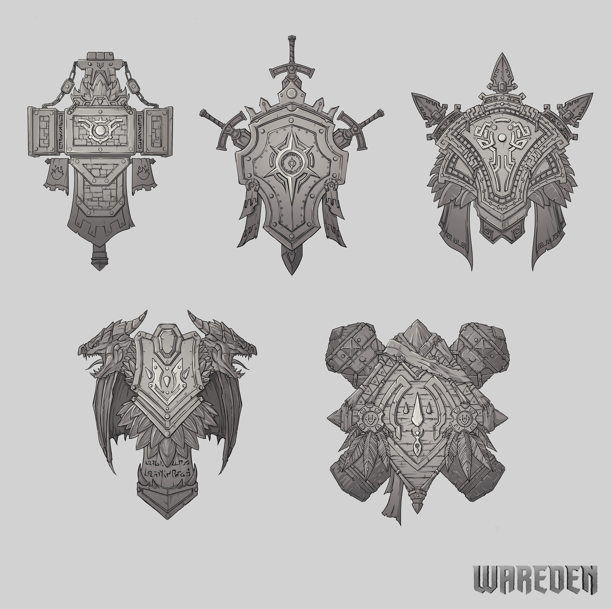
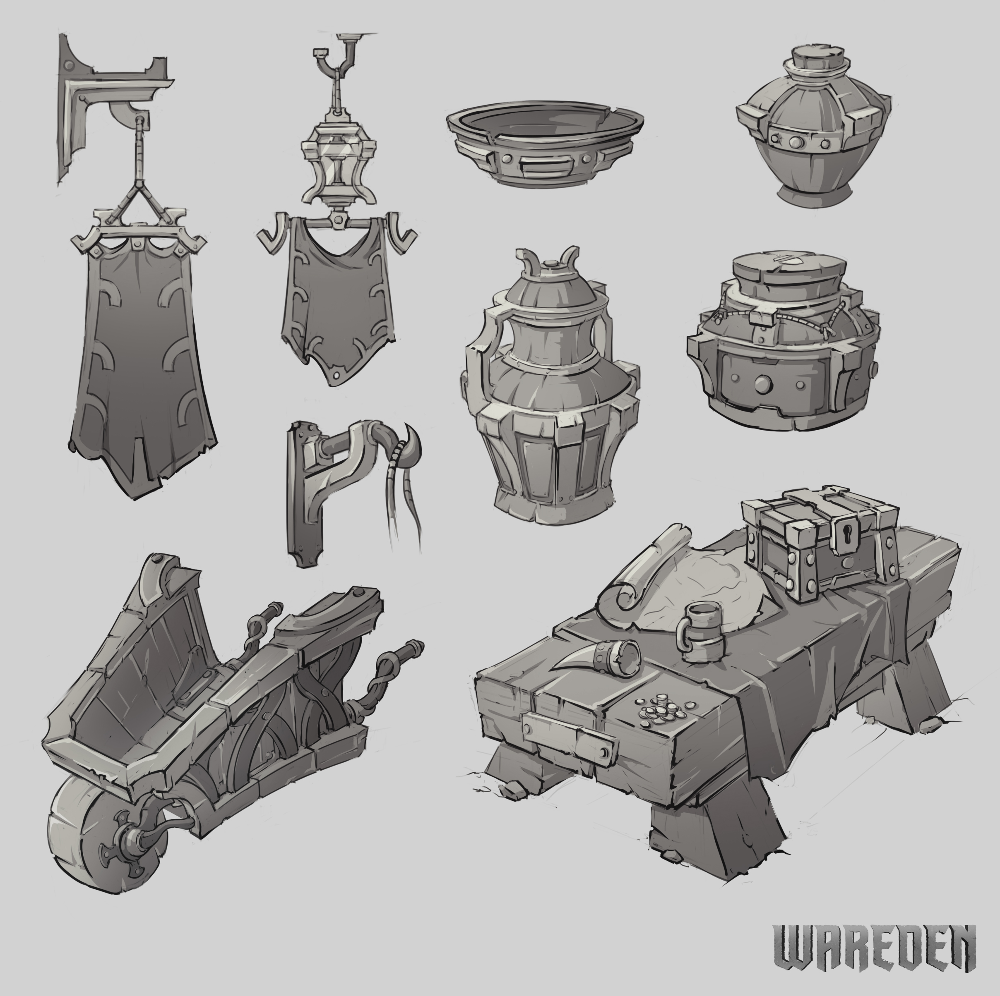
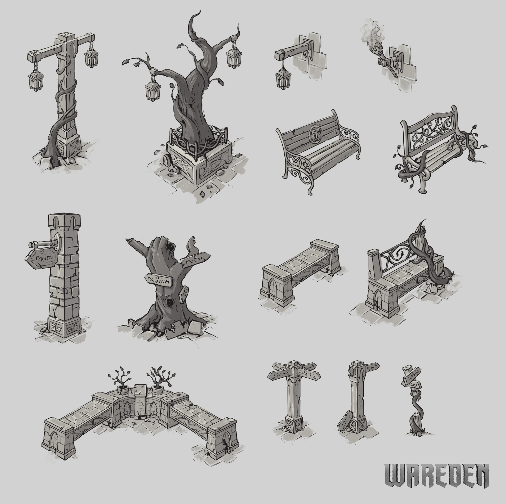
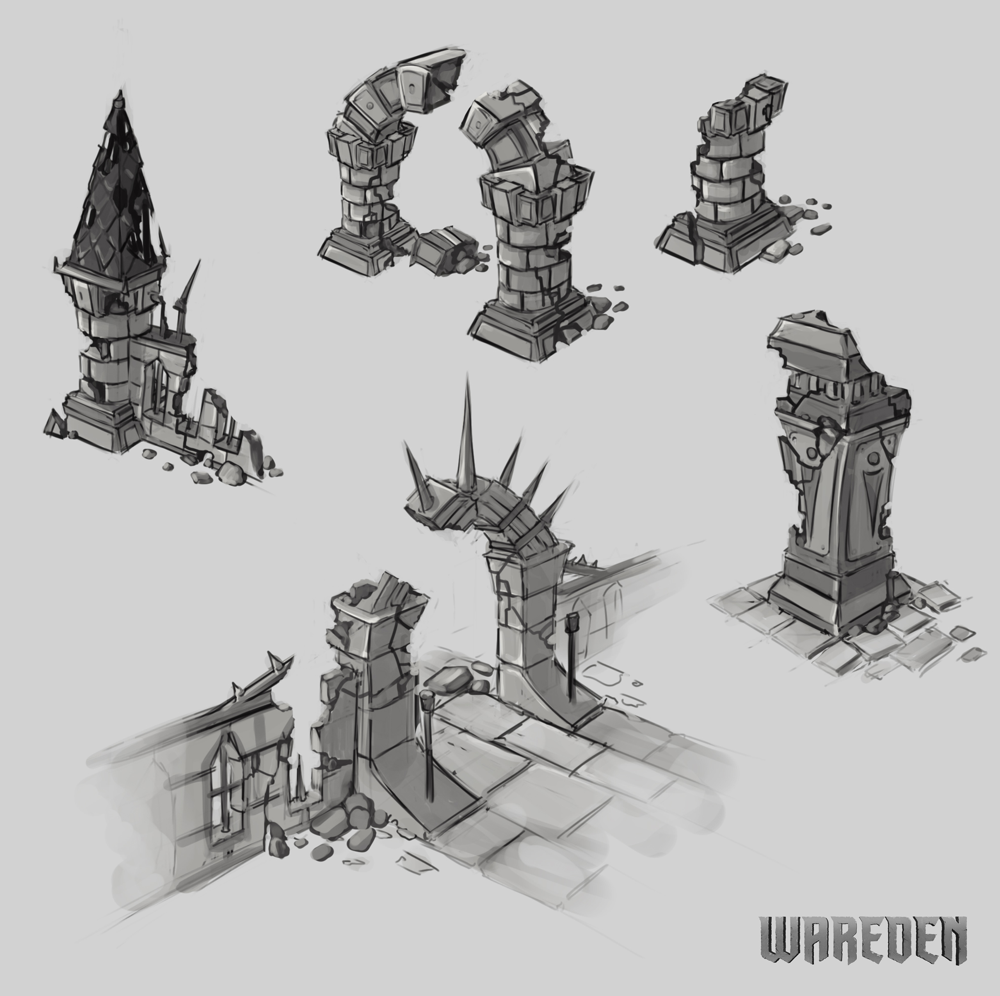
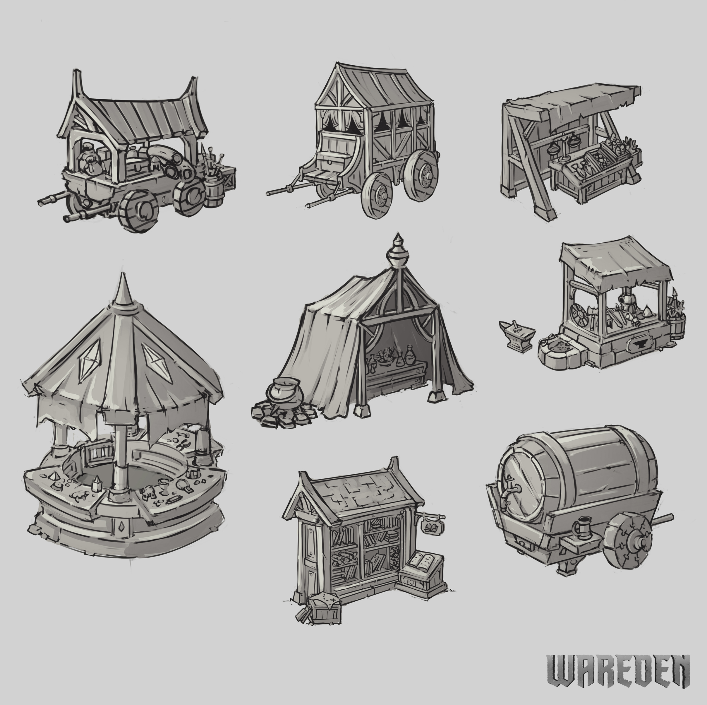
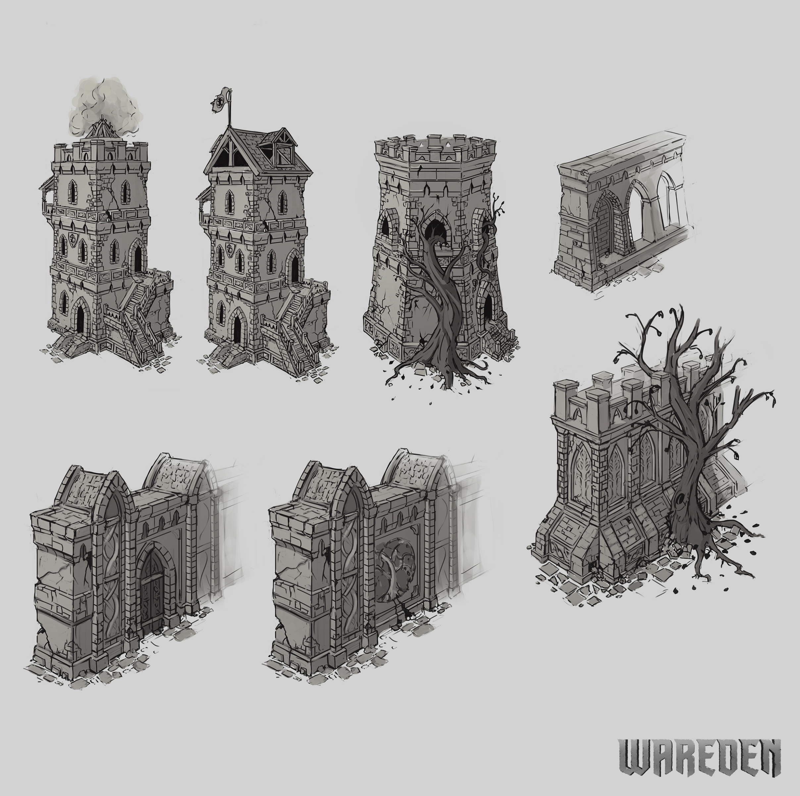

MMORPG / Concept Art
WarEden
Concept exploration for an original fantasy MMORPG across armor, architecture, props, factions and environments.






MMORPG / Concept Art
Concept exploration for an original fantasy MMORPG across armor, architecture, props, factions and environments.





